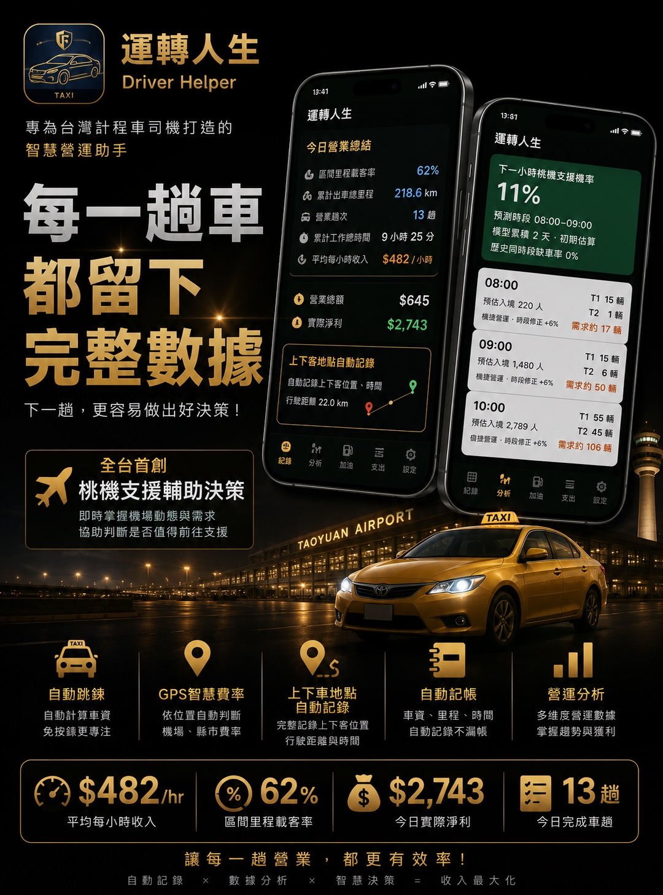

自動跳錶
減少手動操作，讓行程紀錄更順手。
DriverHelper
每一趟車，
都留下完整數據
下一趟，更容易做出好決策
DriverHelper 功能全覽

取得測試版
每天都用得上的工具
減少手動操作，讓行程紀錄更順手。
依所在位置輔助判斷適用費率。
保留每趟行程的重要地點資訊。
整理營收紀錄，減少收車後的負擔。
從行程數據看見自己的營運節奏。
根據即時機場資訊與需求預估，協助司機判斷是否值得前往支援。
第一次安裝也不困難
從本頁的金色下載按鈕取得安裝檔。
請保留瀏覽器頁面，直到下載結束。
點擊手機通知列，或到「下載」資料夾找到 APK。
第一次安裝時，依系統提示允許瀏覽器或檔案管理員安裝。
等待安裝完成後，即可開啟 DriverHelper。
畫面文字可能不同不同品牌手機的文字可能略有不同，例如「允許此來源」、「安裝未知應用程式」或「允許安裝應用程式」。
下載前請先閱讀
常見安裝問題
Android 會阻擋不是從 Google Play 安裝的 App。請依畫面提示進入設定，允許目前使用的瀏覽器或檔案管理員「安裝未知應用程式」，再回到 APK 安裝畫面。
先查看瀏覽器的「下載內容」，或開啟手機的「檔案／我的檔案」App，進入「下載（Download）」資料夾，尋找副檔名為 .apk 的檔案。
能否保留資料，取決於新版 App 與原版本的套件、版本及簽章是否一致。一般覆蓋更新不會主動清除資料，但測試版仍可能調整資料格式，重要營業資料請先備份。
不可以。本頁提供的是 Android APK，僅支援 Android 手機，iPhone 無法安裝 APK。
這是 Google Drive 對大型檔案的提醒。請先確認網址仍為本頁開啟的 DriverHelper 下載頁，再依 Google Drive 畫面選擇「仍要下載」。APK 請只從本頁取得。
分享下載網站
部署完成後產生網站 QR Code
QR Code 將指向本網站，而不是 APK 檔案。未來更新下載連結時，不需要重新印製 QR Code。
準備開始記錄每一趟
Android 測試版・尚未上架 Google Play